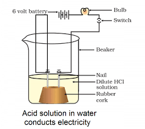
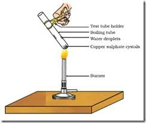

Chapter 2: Acids, Bases and Salts
Exploring the fundamental chemical properties of common substances around us.
From the sour taste of lemon to the slippery feel of soap, acids, bases, and salts play a crucial role in our daily lives and in countless chemical processes. In this chapter, we will delve into their definitions, properties, reactions, and significance, unraveling the chemistry behind their unique behaviors.
2.1 Understanding Acids and Bases: The Fundamentals
Acids and bases are two fundamental classes of chemical compounds with distinct properties that impact everything from our food to industrial processes. We identify them through their chemical behavior rather than taste or touch, as many are corrosive.
2.1.1 Acids: The Producers of H+ Ions
What are Acids?
Acids are substances that typically taste sour (though tasting strong acids is dangerous and should be avoided), turn blue litmus paper red, and can neutralize bases. According to the Arrhenius theory, acids produce hydrogen ions (H+) or, more accurately, hydronium ions (H3O+) when dissolved in water. It's the presence of these H+ ions that gives acids their characteristic properties.
Common Examples of Acids: Hydrochloric acid (HCl), Sulphuric acid (H2SO4), Nitric acid (HNO3), Acetic acid (CH3COOH), Carbonic acid (H2CO3).
Key Properties of Acids:
- Taste: Sour (e.g., lemon juice, vinegar). *Always remember: Never taste chemicals in the lab!*
- Litmus Test: They turn blue litmus paper red.
- Corrosive Nature: Strong acids are highly corrosive and can cause severe burns on skin and damage materials.
- Electrical Conductivity: Aqueous solutions of acids conduct electricity due to the presence of free ions.
- Effect on Indicators: Turn methyl orange red and phenolphthalein colorless.
2.1.2 Bases: The Producers of OH- Ions
What are Bases?
Bases are substances that taste bitter (again, do not taste them in the lab), feel slippery or soapy to touch, and turn red litmus blue. According to the Arrhenius theory, bases produce hydroxide ions (OH-) when dissolved in water.
Those bases which are soluble in water are called alkalis (e.g., NaOH, KOH, Ca(OH)2). All alkalis are bases, but not all bases are alkalis.
Common Examples of Bases: Sodium hydroxide (NaOH), Potassium hydroxide (KOH), Calcium hydroxide (Ca(OH)2), Magnesium hydroxide (Mg(OH)2 - Milk of Magnesia), Ammonium hydroxide (NH4OH).
Key Properties of Bases:
- Taste: Bitter. *Never taste chemicals!*
- Feel: Soapy or slippery to touch.
- Litmus Test: They turn red litmus paper blue.
- Corrosive Nature: Strong bases are also corrosive and can cause chemical burns.
- Electrical Conductivity: Aqueous solutions of bases conduct electricity.
Activity 2.3:
Aim: To demonstrate that aqueous solutions of acids and bases conduct electricity, while certain other solutions (like glucose or alcohol) do not.
Materials Required: Beaker (100 mL), 6V battery, wires, bulb (6V), switch, two graphite rods (or carbon electrodes from old dry cells), rubber cork, dilute HCl solution, dilute NaOH solution, glucose solution, alcohol solution, distilled water.
- Take a 100 mL beaker and place two graphite rods on a rubber cork. Connect the rods to the two terminals of a 6V battery through a switch and a bulb, as shown in the diagram.
- Pour dilute HCl solution into the beaker, ensuring the electrodes are immersed.
- Switch on the current and observe if the bulb glows.
- Wash the beaker and electrodes thoroughly with distilled water.
- Repeat the experiment with dilute NaOH solution.
- Finally, repeat the experiment with glucose solution, alcohol solution, and distilled water (using a clean beaker and electrodes each time).
Observations:
- The bulb glows brightly when dilute HCl solution is used.
- The bulb also glows brightly when dilute NaOH solution is used.
- The bulb does not glow when glucose solution, alcohol solution, or distilled water is used.
Inference:
The glowing of the bulb indicates that the solutions conduct electricity. Acids (like HCl) and bases (like NaOH) dissociate into free moving ions (H+/H3O+ and OH- respectively) when dissolved in water. These free ions are the charge carriers responsible for the conduction of electricity. Glucose and alcohol are covalent compounds and do not produce ions in water, hence they do not conduct electricity. Distilled water, being pure, has very few ions and is also a poor conductor. This proves that the presence of ions is crucial for electrical conductivity in aqueous solutions of acids and bases.
2.2 Chemical Reactions of Acids and Bases
Understanding how acids and bases react with other substances is key to their classification and applications.
2.2.1 Reaction of Acids with Metals: Hydrogen Gas Evolution
Acids react with most metals (that are more reactive than hydrogen in the activity series) to produce a salt and hydrogen gas (H2). This reaction is often vigorous and can be identified by the characteristic "pop" sound test for hydrogen gas when a burning splinter is brought near the gas.
Activity 2.9: Reaction of Zinc with Acid and Test for Hydrogen Gas
Aim: To observe the reaction of a dilute acid with a metal and identify the gas produced.
Materials Required: Conical flask, test tube, delivery tube, stand, dilute sulphuric acid (or dilute HCl), zinc granules, soap solution, burning splinter (candle or matchstick).
- Take a few zinc granules (~2-3 grams) in a clean conical flask.
- Set up the apparatus as shown in the diagram.
- Add about 5 mL of dilute sulphuric acid (H2SO4) to the zinc granules in the flask.
- You will immediately observe the formation of gas bubbles on the surface of the zinc granules.
- Pass the gas evolved through a soap solution by connecting a delivery tube from the conical flask to a test tube containing soap solution.
- Bubbles of the gas will be formed in the soap solution. Bring a burning splinter near the gas-filled bubbles collected at the mouth of the test tube.
Observations:
- There is a vigorous effervescence (formation of gas bubbles) in the conical flask.
- The gas produced forms bubbles in the soap solution, and these bubbles rise into the air.
- When a burning splinter is brought near the gas bubbles, it extinguishes with a distinctive "pop" sound.
Inference:
The "pop" sound confirms that the gas produced is hydrogen gas (H2), as hydrogen gas burns with a pop sound. This activity demonstrates that acids react with active metals (like zinc) to liberate hydrogen gas and form a salt (zinc sulphate in this case).
Acid + Metal → Salt + Hydrogen Gas
Example 1: Dilute Sulphuric Acid with Zinc
Zn(s) + H2SO4(aq) → ZnSO4(aq) + H2(g)↑
Example 2: Hydrochloric Acid with Magnesium
Mg(s) + 2HCl(aq) → MgCl2(aq) + H2(g)↑
Example 3: Nitric Acid (dilute) with Magnesium
Mg(s) + 2HNO3(aq) → Mg(NO3)2(aq) + H2(g)↑
Example 4: Hydrochloric Acid with Iron
Fe(s) + 2HCl(aq) → FeCl2(aq) + H2(g)↑
Example 5: Sulphuric Acid with Aluminium
2Al(s) + 3H2SO4(aq) → Al2(SO4)3(aq) + 3H2(g)↑
2.2.2 Reaction of Bases with Metals: Active Metals Only
Unlike acids, not all metals react with bases. Only certain metals, known as amphoteric metals (e.g., zinc (Zn), aluminium (Al), lead (Pb)), which can react with both acids and bases, react with strong bases to produce hydrogen gas and a salt (often a complex salt like a zincate or aluminate).
2NaOH(aq) + Zn(s) → Na2ZnO2(aq) + H2(g)↑
(Formation of Sodium zincate)
Example 2: Sodium Hydroxide with Aluminium
2NaOH(aq) + 2Al(s) + 2H2O(l) → 2NaAlO2(aq) + 3H2(g)↑
(Formation of Sodium meta-aluminate)
Example 3: Potassium Hydroxide with Zinc
2KOH(aq) + Zn(s) → K2ZnO2(aq) + H2(g)↑
(Formation of Potassium zincate)
Example 4: Potassium Hydroxide with Lead
2KOH(aq) + Pb(s) → K2PbO2(aq) + H2(g)↑
(Formation of Potassium plumbite)
Example 5: Hot Concentrated NaOH with Aluminium
6NaOH(aq) + 2Al(s) → 2Na3AlO3(aq) + 3H2(g)↑
(Formation of Sodium aluminate - sometimes written as NaAlO2 with H2O on LHS)
2.3 Reaction of Acids with Metal Carbonates and Bicarbonates: CO2 Evolution
Acids react with metal carbonates and metal bicarbonates (also known as hydrogen carbonates) to produce a salt, water, and carbon dioxide gas (CO2). This reaction is commonly used to test for the presence of carbonates or bicarbonates, as CO2 can be detected by the lime water test.
Acid + Metal Carbonate → Salt + Water + Carbon Dioxide
General Equation (Bicarbonate):
Acid + Metal Bicarbonate → Salt + Water + Carbon Dioxide
Example 1: Hydrochloric Acid with Sodium Carbonate
2HCl(aq) + Na2CO3(s) → 2NaCl(aq) + H2O(l) + CO2(g)↑
Example 2: Nitric Acid with Sodium Bicarbonate
HNO3(aq) + NaHCO3(s) → NaNO3(aq) + H2O(l) + CO2(g)↑
Example 3: Sulphuric Acid with Calcium Carbonate (e.g., in limestone)
H2SO4(aq) + CaCO3(s) → CaSO4(aq) + H2O(l) + CO2(g)↑
Example 4: Acetic Acid with Potassium Carbonate
2CH3COOH(aq) + K2CO3(s) → 2CH3COOK(aq) + H2O(l) + CO2(g)↑
Example 5: Hydrochloric Acid with Calcium Bicarbonate (found in hard water)
2HCl(aq) + Ca(HCO3)2(aq) → CaCl2(aq) + 2H2O(l) + 2CO2(g)↑
Activity: Testing for CO2 Gas (The Lime Water Test)
When carbon dioxide gas is passed through freshly prepared lime water (calcium hydroxide solution), it turns milky due to the formation of insoluble calcium carbonate precipitate. This is a common test to confirm the presence of CO2.
- Take a test tube containing dilute HCl.
- Add a pinch of sodium carbonate or sodium bicarbonate.
- A gas will evolve. Pass this gas through freshly prepared lime water in another test tube.
- Observe the lime water turning milky.
If excess CO2 is passed through the milky solution, the milkiness disappears due to the formation of soluble calcium bicarbonate.
(Milky precipitate formation)
CaCO3(s) + H2O(l) + CO2(g) → Ca(HCO3)2(aq)
(Milkiness disappears due to formation of soluble compound)
2.4 Neutralization Reaction: The Acid-Base Dance
The reaction between an acid and a base is called a neutralization reaction. In this process, the characteristic properties of both the acid and the base are effectively "neutralized," leading to the formation of a salt and water. This is a specific type of double displacement reaction, specifically an acid-base reaction.
Acid + Base → Salt + Water
Example 1: Hydrochloric Acid and Sodium Hydroxide
HCl(aq) + NaOH(aq) → NaCl(aq) + H2O(l)
(Formation of Sodium Chloride)
Example 2: Sulphuric Acid and Potassium Hydroxide
H2SO4(aq) + 2KOH(aq) → K2SO4(aq) + 2H2O(l)
(Formation of Potassium Sulphate)
Example 3: Nitric Acid and Calcium Hydroxide
2HNO3(aq) + Ca(OH)2(aq) → Ca(NO3)2(aq) + 2H2O(l)
(Formation of Calcium Nitrate)
Example 4: Acetic Acid (Ethanoic Acid) and Ammonium Hydroxide
CH3COOH(aq) + NH4OH(aq) → CH3COONH4(aq) + H2O(l)
(Formation of Ammonium Acetate)
Example 5: Phosphoric Acid and Sodium Hydroxide
H3PO4(aq) + 3NaOH(aq) → Na3PO4(aq) + 3H2O(l)
(Formation of Sodium Phosphate)
The heat evolved during a neutralization reaction is called the heat of neutralization, often leading to a temperature increase in the solution. This is an exothermic reaction.
2.5 Strength of Acids and Bases: The pH Scale
Not all acids and bases are equally strong. Their strength is measured using the pH scale, which indicates the concentration of hydrogen ions in a solution. A higher concentration of H+ ions signifies a stronger acid, and a lower concentration means a stronger base.
What is pH?
The term pH stands for 'potential of hydrogen'. It is a logarithmic scale used to specify the acidity or basicity of an aqueous solution, ranging from 0 to 14. The pH value is defined as the negative logarithm (base 10) of the hydrogen ion concentration: pH = -log[H+].
- pH < 7: Acidic solution (lower pH = stronger acid, higher H+ concentration)
- pH = 7: Neutral solution (e.g., pure water, equal H+ and OH- concentrations)
- pH > 7: Basic (Alkaline) solution (higher pH = stronger base, lower H+ concentration, higher OH- concentration)
pH is inversely proportional to the concentration of hydrogen ions (H+). A change of one pH unit means a tenfold change in H+ concentration.
Importance of pH in Everyday Life:
- 1. Our Digestive System: Our stomach produces highly acidic hydrochloric acid (pH approx. 1.2-3.0) for the digestion of food. An imbalance can lead to acidity or indigestion, which is relieved by antacids (mild bases).
- 2. pH of Soil: Plants grow best at a specific pH range (usually slightly acidic to neutral). Farmers often test soil pH and adjust it by adding substances like quicklime (calcium oxide) or slaked lime (calcium hydroxide) to acidic soil, or organic matter to basic soil.
- 3. pH in Tooth Decay: Tooth enamel, made of calcium phosphate (the hardest substance in the body), is corroded when the pH in the mouth falls below 5.5. This happens due to acids produced by bacteria breaking down sugar particles from food. Using basic toothpaste can neutralize these acids.
- 4. Self-Defense by Animals and Plants:
- A bee sting injects an acidic liquid (methanoic acid), causing pain and irritation. It can be relieved by applying a mild base like baking soda solution.
- A wasp sting is alkaline. It can be relieved by applying a mild acid like vinegar.
- Nettle leaves have stinging hairs that inject methanoic acid (formic acid), causing a burning sensation. Rubbing a dock leaf on the affected area, which contains a base, can provide relief.
- 5. pH of Rain Water (Acid Rain): When the pH of rainwater is below 5.6, it is called acid rain. Acid rain is caused by acidic gases (like SO2 and NO2) dissolving in rainwater. It is harmful to aquatic life, damages historical monuments (e.g., Taj Mahal), and affects agricultural fields and forests.
Activity 2.15: Testing pH of Various Solutions Using Universal Indicator
Aim: To determine the pH of various common solutions and classify them as acidic, neutral, or basic using universal indicator paper or solution.
Materials Required: Universal indicator paper or solution, spot plate (or separate test tubes), dropper, samples of various solutions:
- Dilute Hydrochloric Acid (HCl)
- Dilute Sodium Hydroxide (NaOH) solution
- Lemon juice
- Aerated soft drink
- Tap water
- Milk
- Dilute Sodium Bicarbonate (Baking Soda) solution
- Toothpaste solution (dissolved in distilled water)
- Take small amounts of each solution in separate clean test tubes or in separate depressions of a spot plate.
- Add 2-3 drops of universal indicator solution to each, or dip a strip of universal indicator paper into each solution.
- Observe the color change that occurs in each solution.
- Compare the observed color with the standard pH colour chart provided with the universal indicator paper/solution.
- Record your observations and corresponding approximate pH values.
Observations (Expected Results):
- Dilute HCl: Red (pH 1-2, Strongly Acidic)
- Lemon juice: Orange (pH 2-3, Acidic)
- Aerated Soft Drink: Orange-Yellow (pH 3-4, Acidic)
- Tap Water: Greenish-Yellow (pH 6-7, Slightly Acidic to Neutral)
- Milk: Light Green (pH 6.5-6.7, Slightly Acidic)
- Dilute Sodium Bicarbonate: Bluish-Green (pH 8-9, Weakly Basic)
- Toothpaste Solution: Blue (pH 9-10, Basic)
- Dilute NaOH: Violet (pH 13-14, Strongly Basic)
Inference:
This activity clearly demonstrates that different substances have a wide range of pH values. The universal indicator provides a visual means to estimate the pH, allowing us to classify solutions as strongly acidic, weakly acidic, neutral, weakly basic, or strongly basic. It reinforces the concept that the pH scale is a crucial tool for quantifying the strength of acids and bases in solutions.
2.6 Salts: The Products of Neutralization and Beyond
Salts are ionic compounds formed when an acid reacts with a base in a neutralization reaction. They consist of a cation (positive ion) from a base and an anion (negative ion) from an acid. Salts can be acidic, basic, or neutral depending on the strength of the acid and base from which they are formed.
Examples of Salts: Sodium chloride (NaCl), Potassium sulphate (K2SO4), Calcium chloride (CaCl2), Ammonium nitrate (NH4NO3), Sodium acetate (CH3COONa).
2.6.1 Families of Salts
Salts can be categorized into families based on the common acid or base they are derived from (e.g., Chloride salts are derived from hydrochloric acid, Sulphate salts from sulphuric acid, Sodium salts from sodium hydroxide, etc.).
2.6.2 Five Important Common Salts and Their Uses
-
1. Common Salt (Sodium Chloride, NaCl):
Often obtained from seawater through evaporation or from underground deposits. It is an essential component of our food (table salt), used widely as a food preservative (for pickles, meat, fish), and serves as a crucial raw material for the production of many other important industrial chemicals like sodium hydroxide, baking soda, washing soda, and bleaching powder.
-
2. Sodium Hydroxide (NaOH - Caustic Soda):
It is produced by the electrolysis of brine (aqueous sodium chloride solution) in a process called the chlor-alkali process. This process also yields chlorine gas and hydrogen gas as by-products. Sodium hydroxide is a strong base used extensively in making soaps and detergents, paper, artificial fibres (rayon), in the purification of bauxite, and in petroleum refining.
2NaCl(aq) + 2H2O(l) Electricity→ 2NaOH(aq) + Cl2(g)↑ + H2(g)↑ -
3. Bleaching Powder (CaOCl2 - Calcium Oxychloride):
It is produced by the action of chlorine gas on dry slaked lime [Ca(OH)2]. Bleaching powder is used for bleaching cotton and linen in the textile industry, wood pulp in paper factories, and washed clothes in laundries due to its oxidizing properties. It is also used as an oxidizing agent in many chemical industries and, significantly, for disinfecting drinking water to make it free from germs.
Ca(OH)2(s) + Cl2(g) → CaOCl2(s) + H2O(l) -
4. Baking Soda (NaHCO3 - Sodium Hydrogen Carbonate / Sodium Bicarbonate):
A mild, non-corrosive basic salt. It's used in making baking powder (a mixture of baking soda and a mild edible acid like tartaric acid, which produces carbon dioxide gas when heated or mixed with water, causing bread/cakes to rise, making them soft and spongy). It is also a common ingredient in antacids to neutralize excess acid in the stomach (providing relief from indigestion) and is used in soda-acid fire extinguishers.
-
5. Plaster of Paris (CaSO4·½H2O - Calcium Sulphate hemihydrate):
It is produced by heating gypsum (CaSO4·2H2O) at 373 K (100°C). Plaster of Paris (PoP) is a white powder that, on mixing with water, sets into a hard solid mass within 5-15 minutes due to rehydration. Used by doctors for setting fractured bones in the correct position (as a cast), for making toys, statues, and decorative materials, and for making surfaces smooth (e.g., plastering walls and ceilings) before painting.
CaSO4·2H2O(s) 373 K→ CaSO4·½H2O(s) + 1½H2O(l)